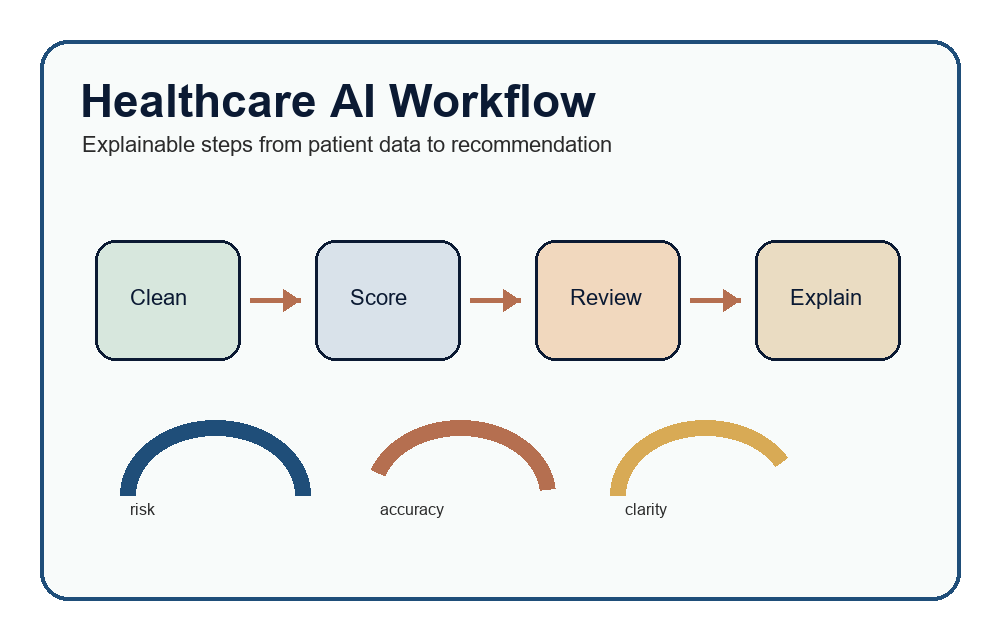
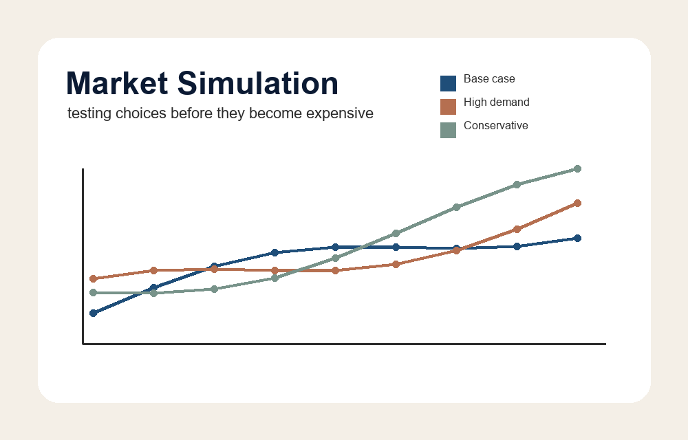

Business Intelligence
Dashboards and reporting that make performance easier to track.
Analytics Portfolio
Hi, I am Markuss Saule. I build dashboards, models, simulations, and analytics workflows that help people understand data faster and make better decisions.

These projects show the kind of work I want my portfolio to be known for: practical analytics with a clear problem, a clear method, and a clear result.

A project concept focused on turning healthcare data into cleaner, explainable recommendations. The goal is not just prediction, but helping a user understand why a result matters.

A simulation that tests business assumptions before a decision is made. It compares possible outcomes and shows how demand, pricing, and timing can change the result.

A dashboard-style project that turns risk factors into a ranked view. It is designed to make priorities easier to explain and defend.
I am interested in the space where business questions, data, and decision-making meet. My work focuses on making analysis understandable, useful, and honest about its assumptions.
See Resume and Skills